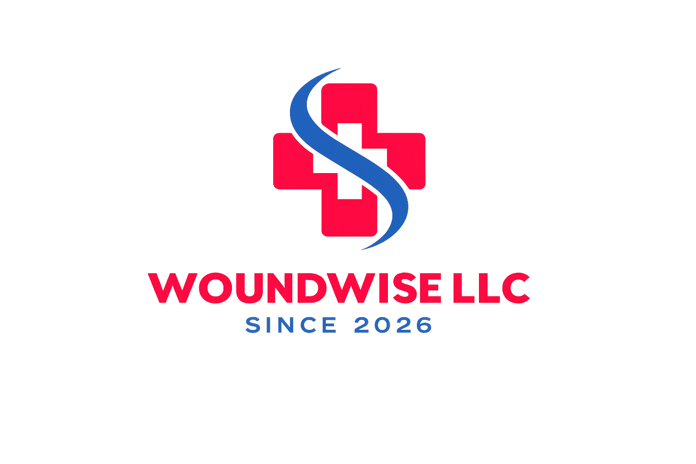
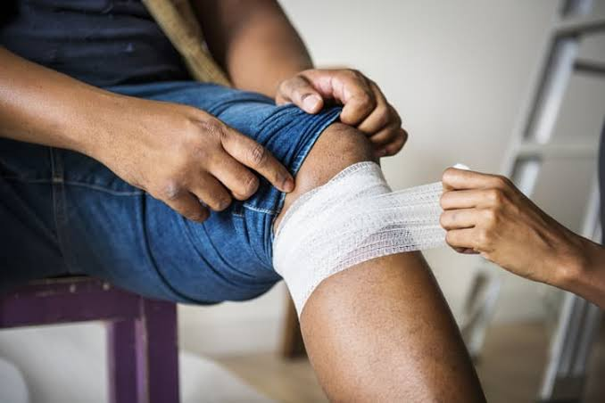
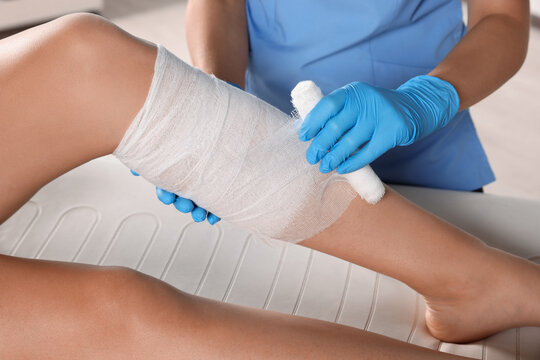
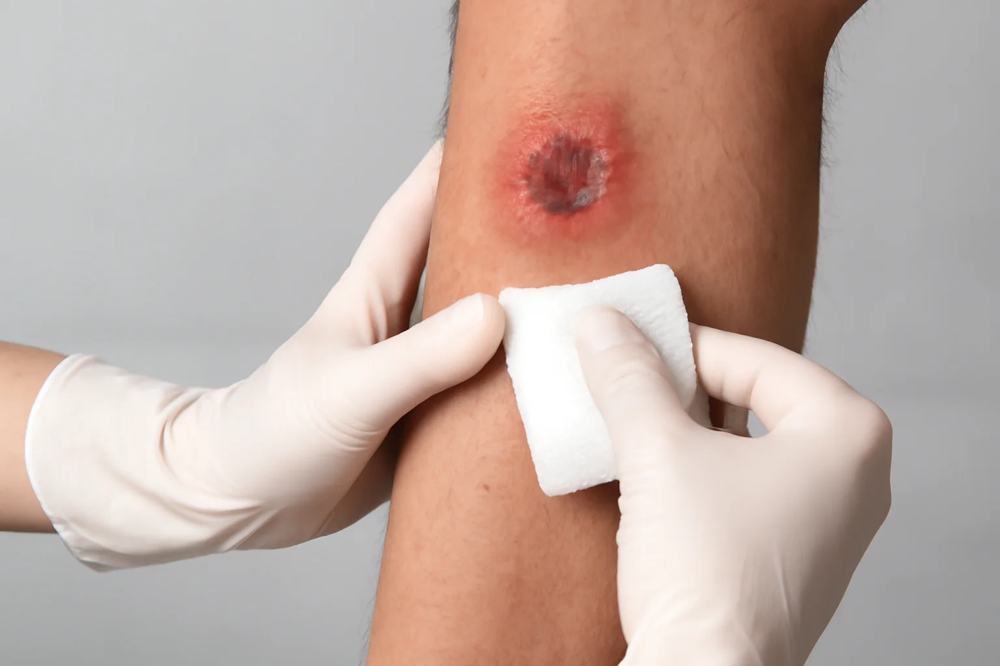
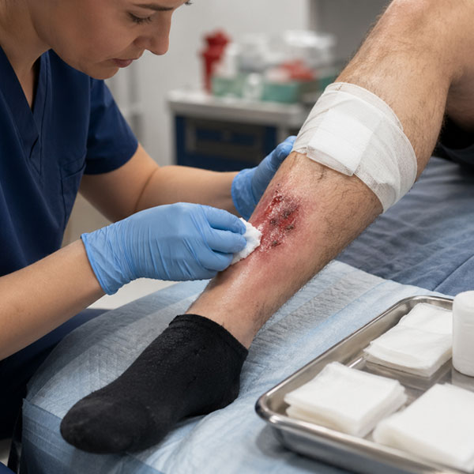
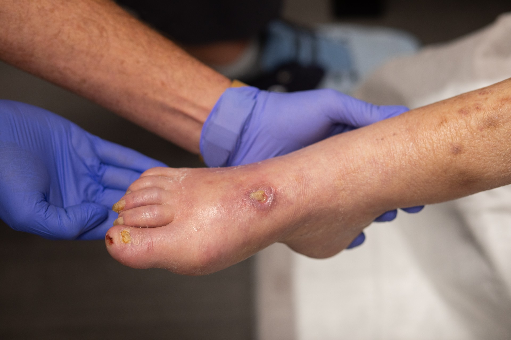
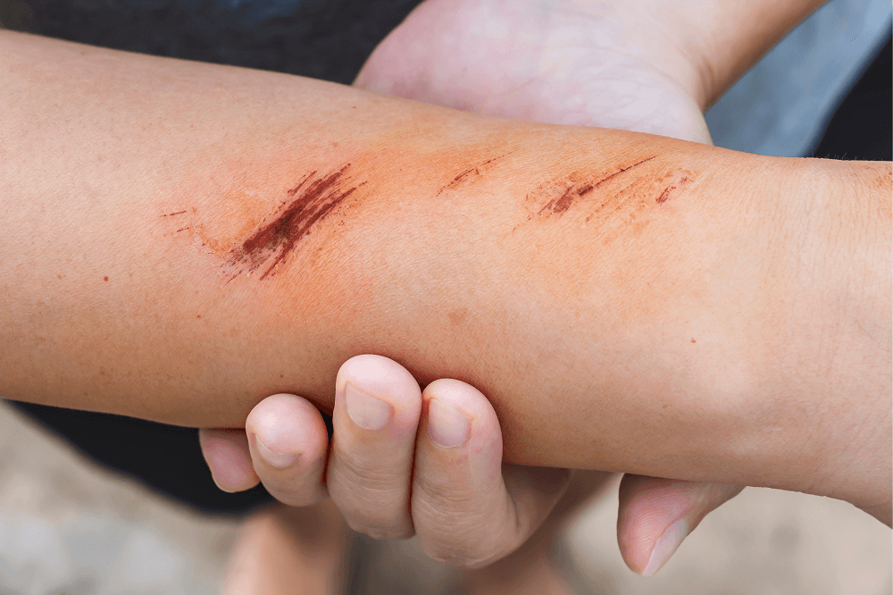

📞 CallExpert wound care delivered in the comfort of your home for patients in New York City and Long Island.

WoundWise LLC provides professional wound care services throughout New York City and Long Island, helping patients recover comfortably in the place they know best: home.

WoundWise LLC provides specialized in-home wound care services throughout New York City and Long Island. Our personalized treatment plans focus on faster healing, infection prevention, and improved patient outcomes.
View All Services
Traumatic wounds occur suddenly due to injuries, accidents, cuts, or surgical complications. Prompt treatment helps reduce infection risks and supports faster healing.
Read More →
Pressure-related wounds develop when prolonged pressure reduces blood flow to the skin. Early intervention is essential to prevent complications and tissue damage.
Read More →
Poor circulation can slow wound healing and increase the risk of chronic wounds. We provide specialized care plans tailored to vascular and diabetic wound conditions.
Read More →
Complex wounds require advanced treatment and ongoing monitoring. Our evidence-based approach focuses on healing difficult wounds while improving patient comfort and quality of life.
Read More →Every treatment plan is designed to promote healing, reduce complications, and improve quality of life from the comfort of home.
Every patient receives a customized treatment plan tailored to their condition, lifestyle, and healing goals.
We use proven wound care techniques and current clinical guidelines to support optimal healing outcomes.
Early identification and proactive treatment help prevent wound deterioration and reduce complications.
Regular follow-up visits allow us to track healing progress and adjust treatment plans when needed.
We provide practical guidance and education to help patients and caregivers confidently manage wound care at home.
Our team delivers expert care with empathy, respect, and clear communication throughout the healing journey.
Refer them today for expert in-home wound care services.
ReferralsLearn more about our in-home wound care services and how WoundWise LLC helps patients heal safely and comfortably at home.